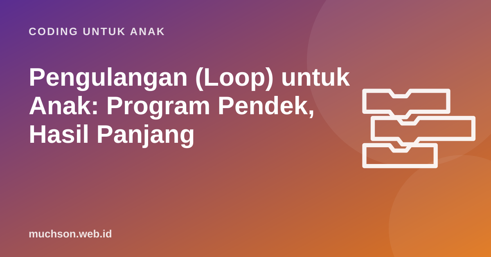

Beranda › Artikel › Coding untuk Anak
Coding untuk AnakPengulangan (Loop) untuk Anak: Program Pendek, Hasil Panjang
Bayangkan menulis "maju 1 langkah" seratus kali. Membosankan, mudah salah hitung, dan susah diubah. Pengulangan atau loop menyelesaikan masalah itu, dan konsep ini sering menjadi momen "aha!" pertama anak dalam belajar coding. Berikut cara menjelaskannya, contoh di Scratch, dan latihan untuk mencoba langsung.

Loop dalam bahasa anak
"Loop artinya mengulang. Kalau ada langkah yang sama dilakukan berkali-kali, kita cukup menulisnya sekali, lalu bilang ke komputer: ulangi sekian kali."
Anak sudah akrab dengan pengulangan tanpa menyadarinya. Lagu "Pok Ame-Ame" mengulang bagian yang sama. Lompat tali dihitung "satu, dua, tiga, ...". Guru olahraga berkata "lari keliling lapangan 3 kali", bukan "lari keliling, lari keliling, lari keliling". Itu semua loop.
Kenapa loop penting dalam coding?
- Lebih pendek. Program lebih mudah dibaca.
- Lebih sedikit salah. Tidak ada risiko kelebihan atau kekurangan satu blok saat menyalin.
- Mudah diubah. Ingin 10 kali, bukan 6? Ganti satu angka.
- Dasar animasi dan game. Hampir setiap game berjalan di dalam loop yang terus memeriksa tombol dan posisi.
Tiga jenis loop di Scratch
| Blok | Artinya | Contoh pemakaian |
|---|---|---|
| ulangi 10 | Mengulang sejumlah kali yang sudah ditentukan | Menggambar persegi: 4 kali gerak lalu putar 90° |
| selamanya | Mengulang terus sampai program dihentikan | Game: terus memeriksa tombol panah |
| ulangi sampai | Mengulang sampai sebuah kondisi terpenuhi | Jalan terus sampai menyentuh tepi |
Skrip persegi di kiri adalah latihan klasik. Setelah anak berhasil, tantang: "Bagaimana membuat segitiga? Segi enam?" Anak akan menemukan sendiri bahwa jumlah ulangan dikali besar sudut putar selalu 360. Ini contoh bagus bagaimana coding membuat konsep matematika terasa nyata.
Latihan: temukan polanya, lalu ulangi
Kunci memakai loop adalah menemukan bagian yang berulang. Di latihan berikut, pilih "ulangi N kali" untuk mengulang seluruh program. Coba dapatkan bintang efisiensi dengan program sependek mungkin.
Di level "Permata berjajar", banyak anak mencoba pola "maju, ambil" lalu bingung karena Robo tidak sampai ke bendera. Coba geser cara pandangnya: kalau polanya "maju, ambil, maju", apakah diulang 3 kali pas sampai bendera? Memilih potongan pola yang tepat adalah bagian penting dari berpikir komputasional.
Loop di dalam loop
Setelah paham loop tunggal, anak bisa naik ke loop bersarang: loop yang berada di dalam loop lain. Contoh sehari-hari: "Setiap hari (loop luar) dalam seminggu, sikat gigi 2 kali (loop dalam)". Totalnya 7 × 2 = 14 kali.
Pola bunga seperti ini sangat memuaskan bagi anak karena program pendek menghasilkan gambar yang rumit. Ini juga cara bagus memperkenalkan perkalian: 6 persegi × 4 sisi = 24 garis.
Kesalahan umum saat belajar loop
Langkah berikutnya
Setelah loop, konsep berikutnya biasanya kejadian (program bereaksi ketika tombol ditekan) dan percabangan (jika ... maka ...). Gabungan loop dan percabangan adalah inti dari hampir semua game. Anak bisa mencoba konsep loop di Pelajaran 2 PixelKode yang gratis.
Tanya jawab
Apa itu loop dalam pemrograman?
Apa contoh loop dalam kehidupan sehari-hari?
Apa beda blok "ulangi" dan "selamanya" di Scratch?
Kapan anak siap belajar loop bersarang?
Sumber dan bacaan lanjut
- Scratch untuk pendidik
- Brennan & Resnick (2012). Kerangka berpikir komputasional (konsep pengulangan)
- CS Unplugged
- Papert, S. (1980). Mindstorms: Children, Computers, and Powerful Ideas